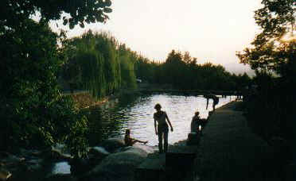
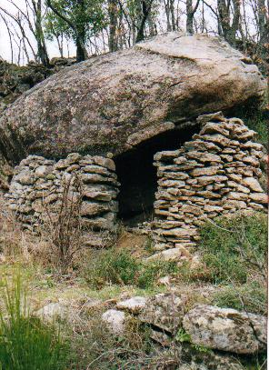
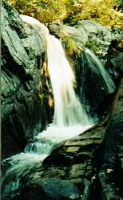
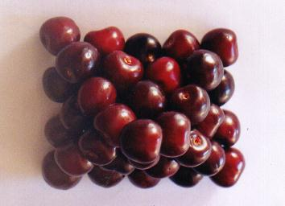

|
|
Gastronomía Empezaremos por la
gastronomía, la lista es un poco larga pero ahí va.
Ensalada de naranjas, patatas escabechadas, zarangollo, peces, gazpacho pobre,
sopa de freje, sopas canas, migas, sopa de tomate, sopa de huevo, caldereta,
patatas con carne, cazuela, chinches con arroz, Con la gastronomía se puede disfrutar durante todo el año, eso sí algunos productos son típicos según la temporada y las festividades. Verano Durante el verano tienen a su
disposición la piscina natural completamente
gratis, en la que podrán pasar las horas de calor y refrescar su cuerpo con las
aguas de la sierra. Tiene  Por las mañanas un paseo es muy recomendable, tiene varias rutas a seguir, también puede practicar con su bicicleta de montaña por muchos lugares. De ruta Dos rutas señalizadas de corto
recorrido le servirán para estirar las piernas, una va por el camino antiguo de
Casas del Monte al Torno ya en Valle del Jerte y otra desde Casas del Monte a
Jarilla. Si  Para más detalles le recomendamos que entre en la página de las cuatro estaciones, en ella le informaremos detalladamente de la naturaleza y como disfrutar de ella durante todo el año. Vida rural Existe la costumbre de
irse a "tomar las once" o "tomar los vinos", no es otra cosa
que ir a los bares o chiringuitos a tomar algo y le acompañaran la bebida con
un  No podemos olvidar la pureza del aire, del agua, el estilo de vida sosegado y todo aquello que hace de los pueblos lugares de paz y tranquilidad, lugares con buena calidad de vida. Poseemos una amplia gama de frutas, si se acercan desde el mes de abril a julio podrá disfrutar de las fresas más exquisitas que haya probado, desde mayo hasta mediados de julio de las cerezas picotas, durante todo el verano de toda clase de frutas y hortalizas. En otoño los higos, castañas, nueces, uvas, manzanas.... Durante el mes de diciembre sobretodo la matanza del cerdo todo un acontecimiento, de la vida social del pueblo. Podrá ver  |
 sopas dulces, cabrito,
chanfaina, landrillas, roscas fritas, perrunillas, coquillos, mantecados,
bollos, galletas, huevos de molinillo con leche, torrijas, hornazo, chorizo de
bútago, morcilla fresca, morcilla fina, cahcomenú, morcilla patatera, morcilla
de calabaza, lomo en tajadillas, queso fresco de cabra, en aceite, con
pimentón, oreado, queso de oveja....
sopas dulces, cabrito,
chanfaina, landrillas, roscas fritas, perrunillas, coquillos, mantecados,
bollos, galletas, huevos de molinillo con leche, torrijas, hornazo, chorizo de
bútago, morcilla fresca, morcilla fina, cahcomenú, morcilla patatera, morcilla
de calabaza, lomo en tajadillas, queso fresco de cabra, en aceite, con
pimentón, oreado, queso de oveja....